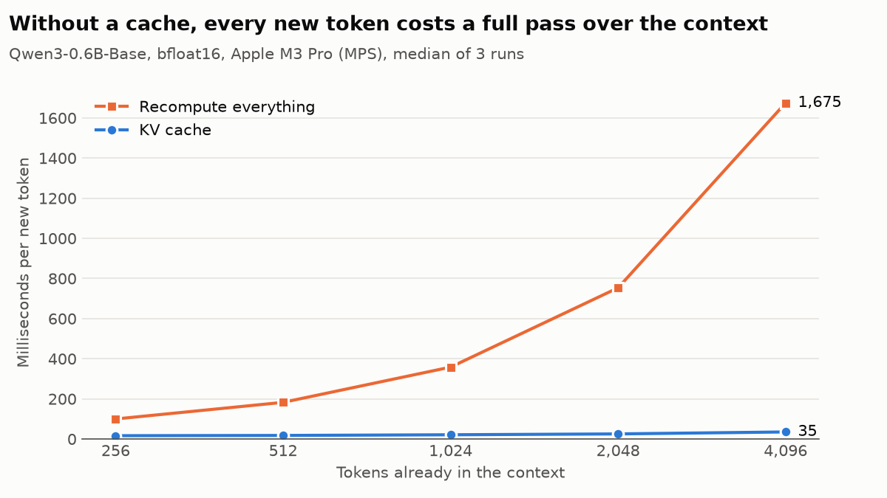
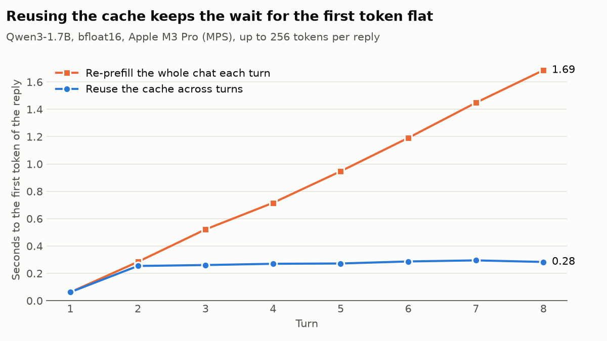

From Scratch - Building a Qwen3 Clone
Deep learning was my favourite subject at university. We started with nothing but linear algebra, calculus, and probability, built a single artificial neuron, worked our way up to convolutional networks, and by the end of the semester had something that looked a little like intelligence ("intelligence" as in telling cats from dogs, but still.) That was 2020. When I picked up Sebastian Raschka's Build a Large Language Model (From Scratch) this year, which has you build and train GPT-2 in plain PyTorch, I got the same feeling again, only stronger: a few simple ingredients, put together carefully, and out comes something that can resemble human speech.
I enjoyed it enough that I didn't want to stop at the last chapter, so I kept going and rebuilt Qwen3, a current open-weight model, loaded the official weights into my own code, added a KV cache and benchmarked the result.
Writing the model turned out to be the easy part. Knowing whether it was right was the hard part. So this post is mostly about the tricky bugs I came across, and how to catch them.
Here is the code on GitHub.
From GPT-2 to Qwen3
GPT-2 is from 2019, and the architecture has moved on since. Qwen3 swaps learned position embeddings for RoPE, multi-head attention for grouped-query attention (GQA), LayerNorm for RMSNorm and the GELU feed-forward for SwiGLU. It also adds QK-norm: queries and keys are RMS-normalised per head before attention, which keeps the attention scores from blowing up during training.
Most of these are small swaps. RoPE and GQA deserve a closer look, because both shape how the KV cache works later.
RoPE: position as rotation
Self-attention has no idea where tokens are. A query and a key give the same dot product whether they're neighbours or a thousand tokens apart. GPT-2 fixes this by adding a learned vector for each position, so each position is learned separately and the model has nothing sensible to say about positions it never saw in training.
RoPE instead rotates each query and key by an angle proportional to its position. The query at position \(m\) is rotated by \(m\theta\), the key at position \(n\) by \(n\theta\), and the angle between them changes by \((n - m)\theta\). Absolute positions cancel out: besides the content of the query and key, the score depends only on how far apart the two tokens are. There are no learned parameters.
A single fast rotation would wrap around quickly: positions \(m\) and \(m + 2\pi/\theta\) would look identical. So the head's dimensions are split into pairs, and each pair rotates at its own frequency. In Qwen3 these range from one radian per position down to about a millionth. The pairs do still wrap around eventually, just like a clock does once a day. But the slowest pair takes about 5 million positions to come full circle, far longer than the model's 32k context, so no two positions it will ever see look the same. A clock works the same way: the second hand alone repeats every minute, but together with the minute and hour hands it tells apart every moment of the day, which is all you need if nothing you time lasts longer than a day.
RoPE has two traps that produce no error at all:
- The pairing. The paper pairs dimension \(i\) with \(i + 1\). Llama, Qwen and most models since pair \(i\) with \(i + d/2\) (the "rotate-half" layout). Both are valid RoPE, but the weights were trained with one of them, and the other silently gives wrong outputs.
- Precision. In bf16, numbers around 30,000 are spaced 128 apart. At position 30,000 the fastest pair's angle is 30,000 radians, so a bf16 angle can be off by tens of radians: the phase is effectively random and cos and sin become noise. The angles have to be computed in fp32, even when the rest of the model runs in bf16. A sneakier version of the same bug: if you precompute the cos/sin tables and store them as a module buffer,
model.to(torch.bfloat16)quietly casts them for you.
GQA: why the cache is the bottleneck
When you generate for one user at a time, each new token takes very little arithmetic, but it has to read every weight and the whole KV cache from memory. So decoding is usually limited by memory bandwidth rather than compute, and the cache grows with every token of context.
GQA keeps all the query heads but lets several of them share one key/value head. Both Qwen3 models I used have 16 query heads and 8 KV heads, so the cache is half the size. Per token, it stores
in bf16, which is 3.5 GiB at a 32k context instead of 7 GiB with full multi-head attention. I checked the per-token figure against the size of the cache's allocated buffers.
In code, the 8 KV heads are copied with repeat_interleave to line up with the 16 query heads. The trap: the cache has to store K and V before that copy. Store them after it and everything still works, you've just thrown the memory saving away.
How do you know it's right?
A from-scratch model that loads real weights has a big advantage over the book's GPT-2: there's a reference implementation to compare against. I run the same weights and the same input through my model and through Hugging Face transformers, and compare the logits.
In fp32 on the CPU, the largest difference across the whole vocabulary is exactly zero, for both Qwen3-0.6B and Qwen3-1.7B, and the next 64 greedy tokens come out identical. That isn't a hard proof, it was one prompt, in one dtype, on one device. But it's strong evidence, because a bug would have to leave every logit unchanged down to the last bit.
The rest of the tests follow one rule: test the mistakes that are easy to make and fail silently, and skip the trivia like tensor shapes. RoPE's effect on attention scores depends on relative position, not absolute. Grouped heads equal multi-head attention with repeated keys and values. Cached generation equals recomputing everything. Most of these run on a tiny random model, so CI never downloads a weight file.
The KV cache
Without a cache, generating token \(t\) means running all \(t\) tokens through the model again, so every new token costs more than the last. With a KV cache, at each layer, we store the keys and values of every token so far. A new token then computes only its own query, key and value, and attends over the stored ones.
This only works because of the causal mask. A token's key and value depend only on that token and the ones before it, so nothing that comes later can change them. They're computed once and reused forever. Since RoPE rotates each key by its own position alone, keys can even be stored already rotated. (A big advantage over earlier relative position schemes such as T5's, which add a term for each query-key pair inside attention that can't be stored with the cached keys.)
Inference now has two phases. Prefill runs the whole prompt through in one pass and fills the cache. Decode then feeds one token at a time. Two more silent traps live here.
The new token's position is the cache length. In a decode step the input is a single token, so the obvious arange(input_length) gives it position 0. RoPE then rotates its query as if it were at the start of the sequence, so it sees every cached key at the wrong distance, and the model carries on producing plausible, wrong text.
The mask is no longer a square. Without a cache, queries and keys come from the same tokens and the causal mask is a lower triangle. With a cache, only the new tokens produce queries, while keys come from the cached tokens plus the new ones. Here 4 tokens are cached and 3 new ones arrive:
keys: 0 1 2 3 | 4 5 6
query at pos 4: ✓ ✓ ✓ ✓ | ✓ · ·
query at pos 5: ✓ ✓ ✓ ✓ | ✓ ✓ ·
query at pos 6: ✓ ✓ ✓ ✓ | ✓ ✓ ✓
The triangle sits in the bottom-right corner. PyTorch's scaled_dot_product_attention(is_causal=True) builds it from the top-left, so here the query at position 4 would see only key 0. Again, no error. A related shortcut is harder still to catch: skipping the mask whenever there's a cache. In a normal decode step the single new token is the newest one and may see every key, so no mask is exactly right, and every decode test passes. The bug only shows when several new tokens arrive at once on top of a cache. That sounds rare, but it's exactly what happens when a chat user sends a follow-up.
Reusing the cache across chat turns
A chat is a prompt that keeps growing: each turn re-sends the whole conversation. Rather than throwing the cache away after each reply, my ChatSession re-renders the conversation with the chat template, finds the longest prefix that's already in the cache, truncates the cache there and prefills only the rest.
One wrinkle: Qwen3's chat template removes the (empty) thinking block from earlier replies when it renders a new turn. So the tokens of the previous reply change after the fact, and the cache has to roll back to before that reply and prefill it again. Matching on the longest common prefix handles this without a special case.
What it buys
All timings are on an Apple M3 Pro (36 GB), in bf16 on MPS.

Without a cache, the time per new token grows with the context, from 100 ms at 256 tokens to 1.7 s at 4,096. With the cache it still grows, because every step reads more keys, but slowly: from 16 ms to 35 ms. At 4,096 tokens the cache is 48× faster.

The second benchmark is an 8-turn chat with Qwen3-1.7B. Both runs use the KV cache while generating; the only difference is whether it's kept between turns or rebuilt by re-reading the whole conversation at the start of each reply. Keeping it keeps the wait before each reply starts at 0.25 to 0.29 s from turn 2 on, while re-prefilling the whole conversation grows to 1.69 s by turn 8, six times longer.
The time to finish the whole reply improves much less, though. After the prefill, each reply still generates 256 tokens one at a time, which takes 9 to 13 seconds, so even the 1.4 s saved at turn 8 is only about a tenth of the total. Keeping the cache between turns shortens the wait before a reply starts, not the time to finish it. Having a cache at all is what matters for the total: without one, at the 2k context of turn 8, even the smaller 0.6B model spends 750 ms per token instead of 25 ms, so a 256-token reply would take over three minutes instead of about seven seconds.
Where it's still slower
Against transformers, with the same weights, dtype, device and prompt, and a KV cache on both sides:
| model | prefill tok/s (mine / HF) | decode tok/s (mine / HF) |
|---|---|---|
| Qwen3-0.6B | 2,796 / 3,582 | 55.2 / 74.6 |
| Qwen3-1.7B | 1,266 / 1,519 | 27.7 / 32.5 |
transformers decodes 17 to 35% faster. I haven't profiled the gap yet. My suspects are a stop check in the generation loop that waits for the GPU on every token, and repeat_interleave physically copying the key/value heads where the attention kernel could broadcast them instead.
Conclusion
In 2020, a network learning to tell cats from dogs blew my mind. This time it was a model holding a conversation, built from the same simple ingredients: matrix multiplications, a few nonlinearities and a lot of careful bookkeeping. Along the way I got a look at the ideas that make modern LLMs practical, like RoPE, grouped-query attention and the KV cache. What continues to surprise me is how simple each one is on its own, and how much they add up to: together, they're a big part of why a model like this can chat in real time on a laptop.